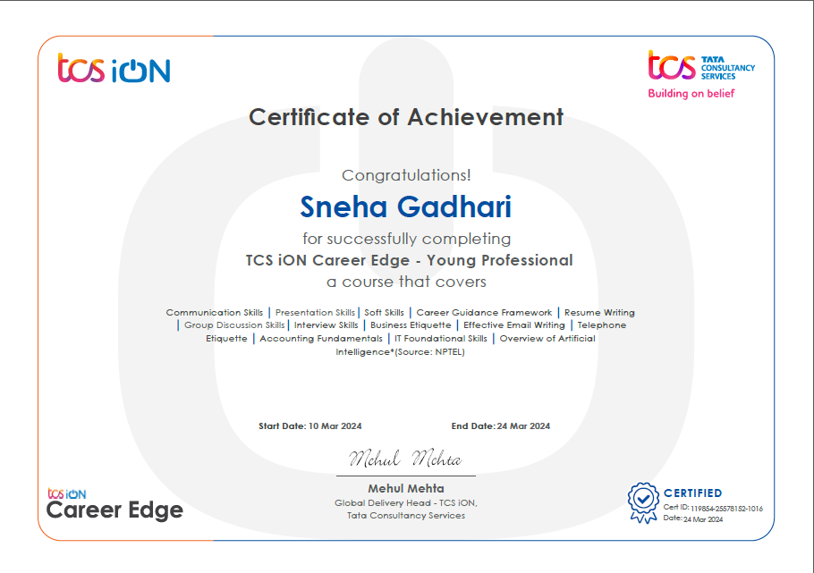

TCS iON Career Edge - Young Professional
- March 2024
- TCS iON Career Edge - Young Professional Course certified, showcasing expertise in essential skills crucial for thriving in diverse professional environments and contributing effectively to organizational success.
